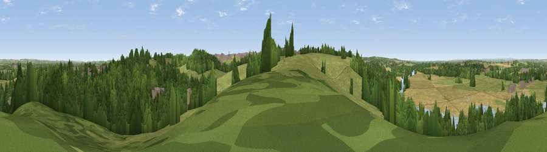

Viewpoint near Weston-on-Trent
#23552 in England · top 33% of its area beats it · near Weston-on-TrentWhere it is
The exact computed spot (SK 41675 27125). Click the marker for map links.
The view, rendered

A 360° render of this exact spot computed from the terrain model, tree cover and land cover — summer colours, afternoon light, calibrated against photographs of famous viewpoints. Real trees, hedges and buildings will differ in detail.
The panorama
Grey silhouette: terrain skyline in each direction (720 bearings, Earth curvature and refraction included). Dashed green: skyline with trees (+15 m) and buildings (+8 m) as obstacles. Blue strip: how far the ground is visible on each bearing.
Where the view opens
Wedge length = distance to the farthest visible ground on that bearing (vegetation-aware). Rings at 10, 25 and 50 km.
What fills the view
38% woodland · 34% grassland · 16% cropland · 5% water · 5% built-up · 2% bare ground
Angular shares of the visible panorama (visual magnitude), not map area. Landscape diversity 0.61 (0–1 Shannon).
Key numbers
More beautiful places nearby
The staircase of upgrades: each row has a higher view potential than everything closer. Driving times are estimates from straight-line distance, calibrated against real road routing — check an actual route before setting out.
| Place | Direction | Drive | Score |
|---|---|---|---|
| Viewpoint near Weston-on-Trent | WSW · 1 km | ~4 min | 54.2 |
| Breedon Hill | SSW · 4 km | ~9 min | 57.9 |
| Viewpoint near Hartshorne | SW · 10 km | ~19 min | 59.5 |
| Viewpoint near Whitwick | SSE · 10 km | ~20 min | 63.6 |
| Viewpoint near Whitwick | SSE · 11 km | ~20 min | 71.2 |
| Ives Head | SSE · 12 km | ~22 min | 73.3 |
| Viewpoint near Stanton under Bardon | SSE · 15 km | ~26 min | 76.0 |
| Viewpoint near Woodhouse Eaves | SE · 15 km | ~28 min | 77.7 |
52.84003, -1.38275 · source: screening · position refined by local search. Computed location — check access rights before visiting.